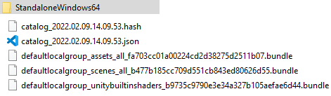

Unity Addressables
If you want to create Unity mods, or simply be able to ask another team to build part of your app without having all of it at hands, the Unity Addressables system is for you.
This system allows you to split your project content in several parts, like Asset Bundles would allow you (the Addressables system is built upon the Asset Bundles one).
In a local configuration, it is already a very convenient way to accelerate loading time, or to use memory more efficiently.
These 2 videos will help you using it : - How Unity3D Addressables make assetbundles easy and your project faster - How To Use Unity Addressables For Beginners Part 1 (Setup & Loading Assets)
You can also use a remote configuration, to be able to greatly decrease your app size, by requesting the user to load the part they need at runtime, only if they need it (new levels, new customizable assets, ...).
This video (along with the following parts 3 and 4) will guide you to use it for these use cases: - How To Use Unity Addressables For Beginners Part 2 (Remote Assets)
Remote addressables, with catalog shared between 2 projects
But you can go even further with the adressables :)
The catalog that you build in your project, does not have to be in your project, and can also be part of the things you fetch at runtime.
This way, you can have your main project fetching a catalog and its related aressables assets that were built in another project, unrelated to yours.
You still have to define in advance what to do with these assets, but with a but of predefined convention, you can build a full mod support with this. Or even more crazy things (* insert mysterious music * ) that I may have in mind ;)
It is not a hack, and is properly supported and documented on Unity side: Adressables: Loading from Multiple Projects
Capabilities
It is very powerful, however keep in mind that you won’t be able to add new code with this.
To sum up these capabilities:
Can
- Organization: Add project parts at runtime
- Organization: Split software parts into several projects that do not know each other
- Assets: add any assets to the project at runtime, material, prefabs, … and instantiate them
- Scenes: Load remote scene, or add them in additive mode
- Code: Add to game objects mono behavior known to both projects (Unity components, shared packages from scoped repositories, or simply copied/pasted code between the two projects)
Can not
- Code: add new code
- Code: add a new loading behavior (“what” to do with new content has to be planned in advance: “load the scene with xxx prefix”, “spawn all prefabs based on another remote config file”, …)
How to
To set up your projects in this splitted configuration (a main project, load asset from a child project), first configure your child project as seen in the video explaining how to set remote addressable assets.
You will have, uploaded to a server, this kind of structure:

Then, in the main project, you have to use LoadContentCatalogAsyncto load the catalog, using the url of the JSON catalog file that you uploaded for the child project.
For instance, to load it :
public IEnumerator Start()
{
string catalogUrl = "http://<your_host>/StandaloneWindows64/catalog_2022.02.09.21.09.53.json";
AsyncOperationHandle<IResourceLocator> handle = Addressables.LoadContentCatalogAsync(catalogUrl);
handle.Completed += (async) =>
{
if (async.Status == AsyncOperationStatus.Failed)
{
Debug.LogError("Unable to fetch child project content");
}
else
{
foreach (var k in async.Result.Keys) {
Debug.Log($"{k} {k.GetType()}");
if (k is string && ((string)k).Contains("Scene"))
{
Debug.Log("Loaded " + (string)k);
Addressables.LoadSceneAsync(k, UnityEngine.SceneManagement.LoadSceneMode.Additive);
}
if (k is string && ((string)k).Contains("prefab"))
{
Debug.Log("Loaded " + (string)k);
Addressables.InstantiateAsync(k, transform.position, transform.rotation);
}
}
}
};
yield return handle;
}
Warning: keep in mind, as described in Jason Weimann's and Dilmer Valecillos's videos, that any content (scene, prefabs, ...) imported from addressables has to be manually released, with Addressables.UnloadSceneAsync for scenes and Addresslabes.Release for others, as well as GameObject instanciated with Addressables.InstantiateAsync from such imported prefabs, with Addressables.ReleaseInstance.
Offline mode
A problem associated with remote content, is of course the problem occuring when either the hosting server or the client themself are offline, as well has the data cost.
Concerning this last point, along the json catalgo, a hash file is created. As long as this file is available, and has not changed, an Unity app will try to use the cached resources downloaded before before downloading the full content again.
The main problem is web the hash itself is not available. I was not able to find an elegant way to require the Addressables to use a cached hash when it is unreachable, but the following workaround works. The adressables system offers some callback to customize the requested id, or to even change the requested url. Here, we'll use a WebRequest override before trying to fetch the catalog:
private void EditWebRequestURL(UnityWebRequest request)
{
if (allowOfflineMode && request.url.Contains(".hash"))
{
string savePath = SavePath(request.url);
Debug.LogError("Cache path for "+request.url+": " + savePath);
if (System.IO.File.Exists(savePath))
{
Debug.LogError("Using cached hash");
request.url = $"file://{savePath}";
}
else
{
StartCoroutine(CacheHash(request.url));
}
}
}
string SavePath(string url)
{
string savePath = string.Format("{0}/{1}", Application.persistentDataPath, Path.GetFileName(url));
return savePath;
}
IEnumerator CacheHash(string url)
{
using (UnityWebRequest www = UnityWebRequest.Get(url))
{
yield return www.SendWebRequest();
if (www.result != UnityWebRequest.Result.Success)
{
Debug.Log(www.error);
}
else
{
string savePath = SavePath(url);
System.IO.File.WriteAllText(savePath, www.downloadHandler.text);
}
}
}
public IEnumerator Start()
{
Addressables.WebRequestOverride = EditWebRequestURL;
//Load a catalog and automatically release the operation handle.
yield return FetchCatalogUrl(catalogDiscoveryUrl);
AsyncOperationHandle<IResourceLocator> handle = Addressables.LoadContentCatalogAsync(catalogUrl);
// .... See previous implementation
}
Reference
- https://unity.com/fr/how-to/simplify-your-content-management-addressables
- https://docs.unity3d.com/Packages/com.unity.addressables@1.19/manual/index.html
- https://docs.unity3d.com/Packages/com.unity.addressables@1.19/manual/LoadContentCatalogAsync.html
- https://learn.unity.com/tutorial/addressables-introduction-to-concepts#
- https://www.raywenderlich.com/14494028-introduction-to-modding-unity-games-with-addressables
- https://docs.unity.cn/Packages/com.unity.addressables@1.19/manual/TransformInternalId.html